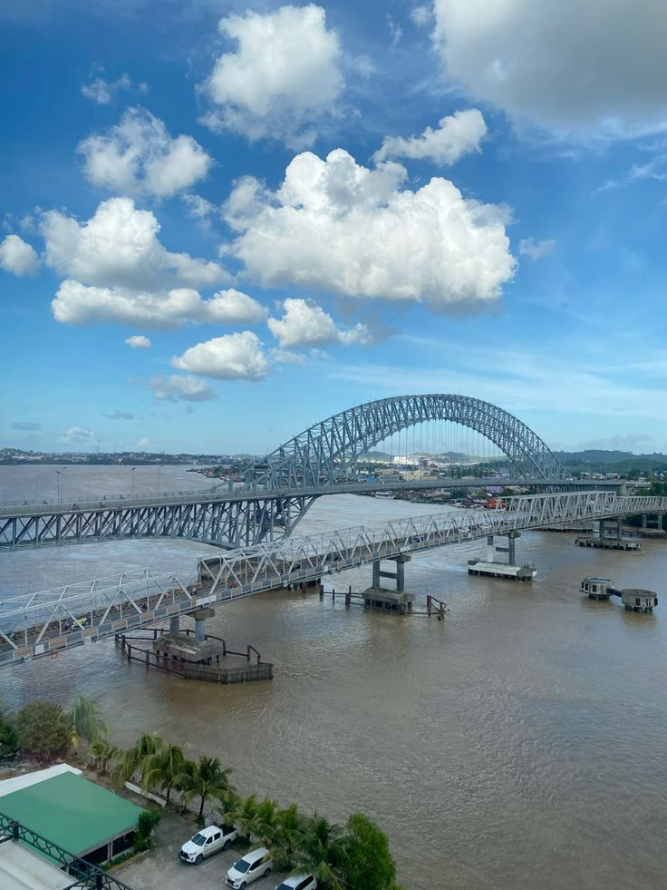
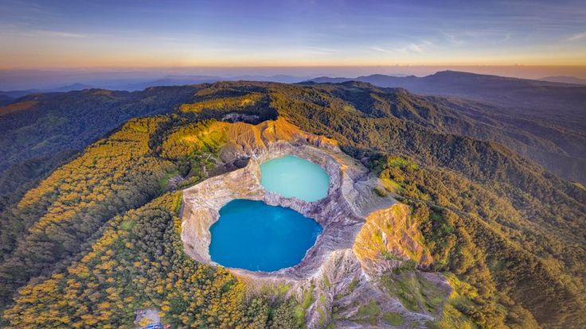

Profil Danau Mungkam

Danau Mungkam adalah salah satu danau yang terletak di daerah terpencil, dikenal dengan keindahan alamnya yang menakjubkan. Sejarah danau ini mencakup peran pentingnya dalam ekosistem lokal dan sebagai sumber kehidupan bagi masyarakat sekitar.
Danau ini juga menjadi tempat penelitian dan pengamatan alam, menarik perhatian para peneliti dan pengunjung yang ingin menikmati keindahan alamnya.
Profil Danau NTT

Danau NTT, yang terletak di Nusa Tenggara Timur, memiliki keunikan tersendiri dengan warna airnya yang bervariasi. Sejarah danau ini kaya akan budaya lokal, di mana masyarakat setempat menganggapnya sebagai tempat yang sakral dan penuh makna.
Danau ini juga menjadi tujuan wisata yang populer, menawarkan pemandangan yang menakjubkan dan kesempatan untuk belajar tentang budaya lokal.
Profil Danau Toba

Danau Toba adalah danau vulkanik terbesar di dunia dan terletak di Sumatra Utara. Sejarah Danau Toba sangat kaya, dengan mitos dan legenda yang mengelilinginya, termasuk kisah tentang asal-usul danau ini yang berasal dari letusan gunung berapi yang dahsyat.
Danau ini juga menjadi pusat budaya Batak, di mana berbagai tradisi dan festival diadakan, menjadikannya sebagai salah satu destinasi wisata utama di Indonesia.